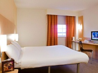
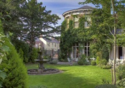
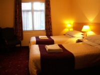
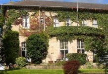

CONFERENCE HOTEL INFORMATION
IEEE ISORC 2016 will be held at the Ron Cooke Hub, at the University of York, between 17-20 May 2016.
This year, ISORC does not have an official conference hotel; instead, delegates are invited to consider the wide range of hotels available in the York area. We recommend the following hotels, which can be booked relatively cheaply either through their main websites or via Expedia.co.uk.
The best way to travel to the Ron Cooke Hub is to use the regular bus service,
which departs from York train station every 10 minutes.
which departs from York train station every 10 minutes.
If you have any problem finding a cheaper hotel, we may have limited alternative accommodation available, please contact Dr. Paul Townend for more information.
|  | IBIS YORK CENTRE |
|---|---|
| NOVOTEL YORK CENTRE (currently this can be booked cheaper via Expedia.co.uk) |
|
|  | BEST WESTERN YORK PAVILION HOTEL |
|  | GEORGIAN HOUSE HOTEL |
|  | ELMBANK HOTEL |